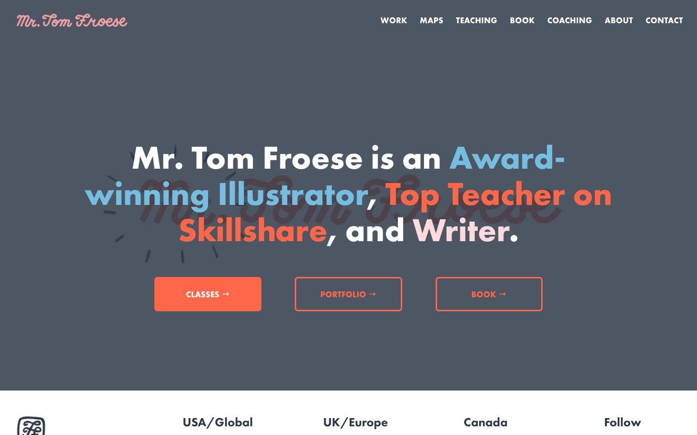

References / Website / 360
Tom Froese website
The illustrator’s home page sets a heavy geometric sans-serif heading in white, sky blue, coral, and pale pink on slate, under a pink script logo.
- Source
- tomfroese.com
- Creator
- Tom Froese
- Style
- Mid-century modern (agent-proposed, not yet reviewed by a person)
- Moods
- Friendly, warm, crafted
- Evidence
- Captured with
tools/capture.mjs(headless Chrome, 1440 × 900) on 28 September 2026 and inspected. The screenshot shows the first viewport; the measurement covers up to four screens. - Reviewed
- Rights
- Third-party work, stored with credit for commentary. License: unverified. Rights policy
Observed
- The hero ground is flat slate gray (#4d5763 in the screenshot palette).
- “Mr. Tom Froese” at upper left is a pink connected script logotype.
- The centered heading is a heavy geometric sans-serif (the CSS names futura-pt-bold). Words are colored white, sky blue, coral, and pale pink.
- A faint dark script version of the name sits behind the heading, with short brush tick marks radiating around it.
- Three buttons in coral: one solid, two outlined with square corners.
- The menu at right is white geometric sans-serif capitals.
Why it belongs
The type pairing is the clearest mid-century signal: a brush script word next to a bold geometric sans, in a few warm colors.
Measured: two hue families, accent chroma 0.62, heading weight 700, round share 0.57. The CSS chromatic share is 0.02 because the colored areas are small.
Borrow
Color single words of a heavy geometric heading in two or three warm hues.
Put a faint script signature behind a sans-serif heading as a texture.
Measured
Machine-extracted by tools/extract-traits.js on . Full measurement.
- Type families
- futura-pt (49%), futura-pt-bold (47%), halyard-display (4%)
- Type scale ratio
- 2.62
- Median radius
- 6.8 px
- Mean chroma
- 0.06
- Palette
- #ffffff 50%
- #2e3848 48%
- #ff6748 2%
- #75bee1 1%
- #ffdadc 0%

